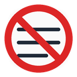

A — Current (ships today)
White card + full prohibition. Readable at 48px+, muddy at 16px.

12832
16
Nine directions at real extension sizes (16 / 32 / 128 px). Check the
16px column first — that's what you squint at in the Firefox toolbar.
Regenerate PNGs: python tools/make_icon_concepts.py
White card + full prohibition. Readable at 48px+, muddy at 16px.

128No circle — just slash over feed lines. Strong at 16px.
B with softer corners. Pairs with rounded popup E1.
Semantic: the slop line gets struck. No ⊘ symbol.
C's dark tile and gray lines, plus B's diagonal slash. No red middle line.
Same as C″ but with the full prohibition ring. Busier at 16px.
C with a dashed red center line — "filtered out" without the heavy solid strike.
NS stamp. Boring but instantly legible in a crowded toolbar.
Universal no symbol. Could mean anything.
Dismiss-badge metaphor. Light / outline style.
Same red left bar as popup E1. Cohesive product.
Square B for comparison. Harsh next to rounded popup.